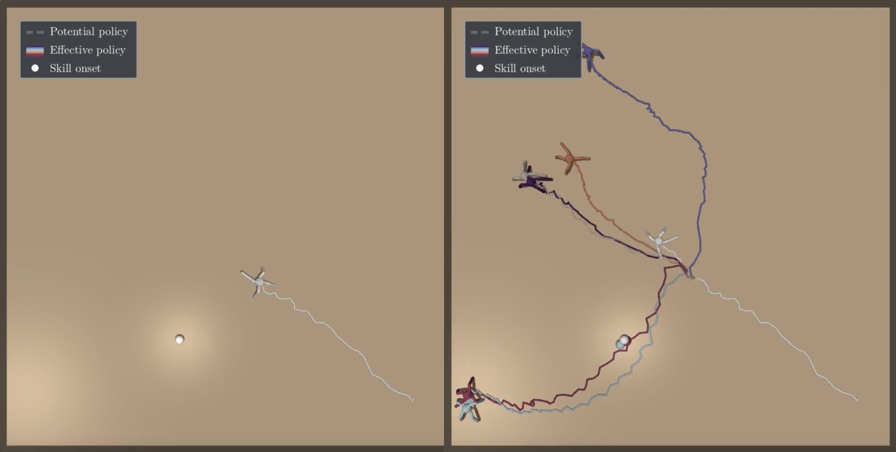
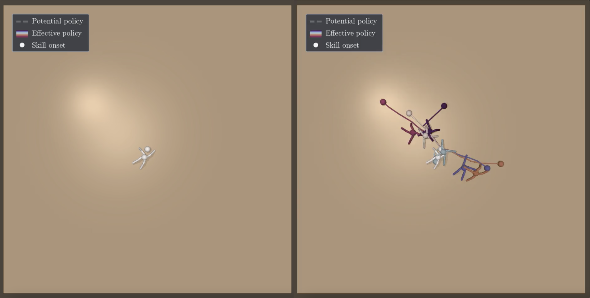
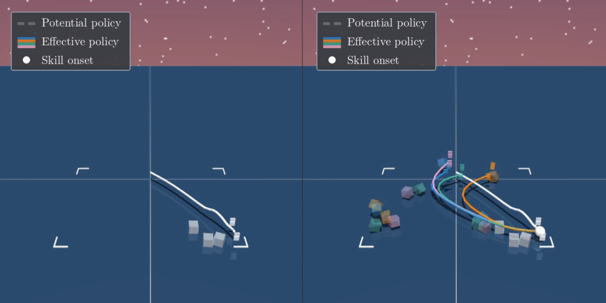

Abstract
Empowerment measures the capacity of an agent to actively control its environment. This object has been identified as an unsupervised mechanism for natural and artificial agents to make sense of large, open-ended environments. In this work, we provide arguably the first demonstration of empowerment maximization in such open-ended, large environments. In addition to achieving state-of-the-art performance in standard exploration metrics, empowered agents perturb their environment in interpretable ways. Our work supports empowerment maximization as a principled mechanism to train open-ended agents.
A Scalable Algorithm for Maximizing Agent Empowerment
In large state spaces, searching for sparse rewards is a hard, often impossible task. An undirected agent often cannot stumble upon interesting behavior using random actions. However, real environments have inherent structure that makes the problem of searching for sparse reward more tractable. In this work, we introduce a method to train agents that maximizes the generic, universal resource of control: we reward an agent for its ability to exert control over an environment.
We quantify control using the information-theoretic quantity of empowerment and build on state-of-the-art skill learning methods to maximize empowerment in open-ended settings. Our starting observation is that state-of-the-art mutual information skill learning methods already maximize quantities similar to empowerment. In this work, we present a recipe to adapt unsupervised skill learning methods to maximize empowerment in challenging, high-dimensional settings.

Figure. Empowerment-maximizing agents learn interpretable behaviors that demonstrate control over their environment, discovering skills that reflect meaningful interactions with the world rather than pursuing novelty alone.
Results in Open-Ended Environments
Empowerment maximization leads to exploratory behavior distinct from other common intrinsic or extrinsic rewards, where agents prioritize controllability instead of novelty. In open-ended environments, empowered agents achieve state-of-the-art performance in standard exploration metrics while learning interpretable behaviors that reflect meaningful resource accumulation and skill discovery.
The empirical results show that empowerment maximization rewards behavior distinct from canonical intrinsic exploratory methods, prioritizing resource and skill accumulation over novelty. Our work suggests that empowerment maximization is a tractable mechanism for agents to explore large, open-ended settings, providing a principled foundation for training agents that can adapt to diverse downstream tasks.

Figure. Empowerment-maximizing agents learn to manipulate and control objects in complex environments, discovering meaningful skills that demonstrate understanding of environmental dynamics.
Empirical Results

Empowerment-maximizing agents in continuous control tasks learn interpretable behaviors demonstrating control over locomotion and environmental interaction.

In manipulation tasks, empowerment maximization leads to skill discovery focused on object control and environmental interaction rather than novelty seeking.
${\bf B\kern-.05em{\small I\kern-.025em B}\kern-.08em T\kern-.1667em\lower.7ex\hbox{E}\kern-.125emX}$
@misc{ji2026empowering,
title={A Scalable Method for Maximizing Agent Empowerment},
author={Ji, Catherine and Myers, Vivek and Levine, Sergey and Eysenbach, Benjamin},
year={2026},
howpublished={Available at \url{https://github.com/vivekmyers/scaling_empowerment}}
}